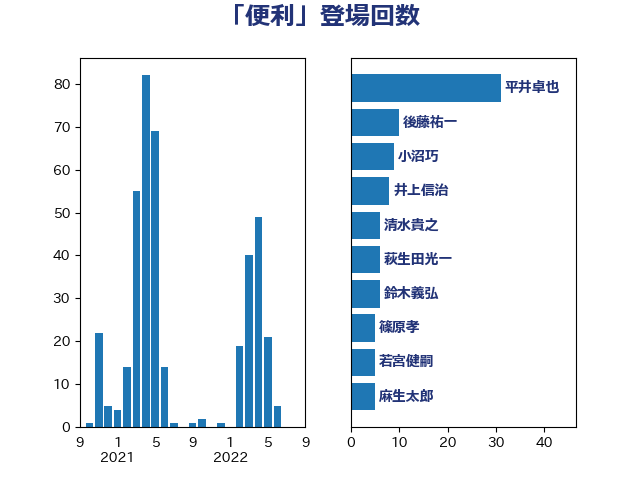

単語「便利」

| 平井卓也 | 自由民主党 | 31 回 |
| 後藤祐一 | 立憲民主党 | 10 回 |
| 小沼巧 | 立憲民主党 | 9 回 |
| 井上信治 | 自由民主党 | 8 回 |
| 清水貴之 | 日本維新の会 | 6 回 |
| 萩生田光一 | 自由民主党 | 6 回 |
| 鈴木義弘 | 国民民主党 | 6 回 |
| 篠原孝 | 立憲民主党 | 5 回 |
| 若宮健嗣 | 自由民主党 | 5 回 |
| 麻生太郎 | 自由民主党 | 5 回 |
| 平山佐知子 | 無所属 | 4 回 |
| 森屋隆 | 立憲民主党 | 4 回 |
| 田嶋要 | 立憲民主党 | 4 回 |
| 田村憲久 | 自由民主党 | 4 回 |
| 福田昭夫 | 立憲民主党 | 4 回 |
| 下野六太 | 公明党 | 3 回 |
| 小林史明 | 自由民主党 | 3 回 |
| 小泉進次郎 | 自由民主党 | 3 回 |
| 山田太郎 | 自由民主党 | 3 回 |
| 岬麻紀 | 日本維新の会 | 3 回 |
| 枝野幸男 | 立憲民主党 | 3 回 |
| 柚木道義 | 立憲民主党 | 3 回 |
| 牧島かれん | 自由民主党 | 3 回 |
| 石垣のりこ | 立憲民主党 | 3 回 |
| 礒崎哲史 | 国民民主党 | 3 回 |
| 藤井比早之 | 自由民主党 | 3 回 |
| 足立康史 | 日本維新の会 | 3 回 |
| 上杉謙太郎 | 自由民主党 | 2 回 |
| 上田清司 | 国民民主党 | 2 回 |
| 中野洋昌 | 公明党 | 2 回 |
| 伊藤岳 | 日本共産党 | 2 回 |
| 古川元久 | 国民民主党 | 2 回 |
| 吉田久美子 | 公明党 | 2 回 |
| 塩崎彰久 | 自由民主党 | 2 回 |
| 大家敏志 | 自由民主党 | 2 回 |
| 大石あきこ | れいわ新選組 | 2 回 |
| 小宮山泰子 | 立憲民主党 | 2 回 |
| 岡田克也 | 立憲民主党 | 2 回 |
| 岸真紀子 | 立憲民主党 | 2 回 |
| 工藤彰三 | 自由民主党 | 2 回 |
| 末松信介 | 自由民主党 | 2 回 |
| 本田太郎 | 自由民主党 | 2 回 |
| 杉本和巳 | 日本維新の会 | 2 回 |
| 梅村聡 | 日本維新の会 | 2 回 |
| 浜田聡 | NHK党 | 2 回 |
| 石井苗子 | 日本維新の会 | 2 回 |
| 竹谷とし子 | 公明党 | 2 回 |
| 赤羽一嘉 | 公明党 | 2 回 |
| 金子恵美 | 立憲民主党 | 2 回 |
| 階猛 | 立憲民主党 | 2 回 |
| 高木かおり | 日本維新の会 | 2 回 |
| ながえ孝子 | 無所属 | 1 回 |
| 下村博文 | 自由民主党 | 1 回 |
| 中川宏昌 | 公明党 | 1 回 |
| 串田誠一 | 日本維新の会 | 1 回 |
| 丸川珠代 | 自由民主党 | 1 回 |
| 五十嵐清 | 自由民主党 | 1 回 |
| 井原巧 | 自由民主党 | 1 回 |
| 今枝宗一郎 | 自由民主党 | 1 回 |
| 伊藤孝恵 | 国民民主党 | 1 回 |
| 伊藤孝江 | 公明党 | 1 回 |
| 伴野豊 | 立憲民主党 | 1 回 |
| 佐々木さやか | 公明党 | 1 回 |
| 佐々木紀 | 自由民主党 | 1 回 |
| 倉林明子 | 日本共産党 | 1 回 |
| 前原誠司 | 国民民主党 | 1 回 |
| 加藤鮎子 | 自由民主党 | 1 回 |
| 古屋範子 | 公明党 | 1 回 |
| 古川直季 | 自由民主党 | 1 回 |
| 古賀之士 | 立憲民主党 | 1 回 |
| 堤かなめ | 立憲民主党 | 1 回 |
| 塩村あやか | 立憲民主党 | 1 回 |
| 大串博志 | 立憲民主党 | 1 回 |
| 大塚耕平 | 国民民主党 | 1 回 |
| 大西健介 | 立憲民主党 | 1 回 |
| 太田房江 | 自由民主党 | 1 回 |
| 奥野総一郎 | 立憲民主党 | 1 回 |
| 室井邦彦 | 日本維新の会 | 1 回 |
| 寺田静 | 無所属 | 1 回 |
| 小林鷹之 | 自由民主党 | 1 回 |
| 小池晃 | 日本共産党 | 1 回 |
| 小熊慎司 | 立憲民主党 | 1 回 |
| 山口晋 | 自由民主党 | 1 回 |
| 山口那津男 | 公明党 | 1 回 |
| 山本博司 | 公明党 | 1 回 |
| 後藤茂之 | 自由民主党 | 1 回 |
| 斉藤鉄夫 | 公明党 | 1 回 |
| 斎藤嘉隆 | 立憲民主党 | 1 回 |
| 日下正喜 | 公明党 | 1 回 |
| 末松義規 | 立憲民主党 | 1 回 |
| 杉久武 | 公明党 | 1 回 |
| 松島みどり | 自由民主党 | 1 回 |
| 柴田巧 | 日本維新の会 | 1 回 |
| 梅村みずほ | 日本維新の会 | 1 回 |
| 梶山弘志 | 自由民主党 | 1 回 |
| 森まさこ | 自由民主党 | 1 回 |
| 沢田良 | 日本維新の会 | 1 回 |
| 河野太郎 | 自由民主党 | 1 回 |
| 泉田裕彦 | 自由民主党 | 1 回 |
| 浮島智子 | 公明党 | 1 回 |
| 源馬謙太郎 | 立憲民主党 | 1 回 |
| 滝沢求 | 自由民主党 | 1 回 |
| 漆間譲司 | 日本維新の会 | 1 回 |
| 熊田裕通 | 自由民主党 | 1 回 |
| 牧原秀樹 | 自由民主党 | 1 回 |
| 牧山ひろえ | 立憲民主党 | 1 回 |
| 玉木雄一郎 | 国民民主党 | 1 回 |
| 田村貴昭 | 日本共産党 | 1 回 |
| 畦元将吾 | 自由民主党 | 1 回 |
| 盛山正仁 | 自由民主党 | 1 回 |
| 石破茂 | 自由民主党 | 1 回 |
| 神谷裕 | 立憲民主党 | 1 回 |
| 竹内譲 | 公明党 | 1 回 |
| 笠井亮 | 日本共産党 | 1 回 |
| 緑川貴士 | 立憲民主党 | 1 回 |
| 舟山康江 | 国民民主党 | 1 回 |
| 藤川政人 | 自由民主党 | 1 回 |
| 藤巻健太 | 日本維新の会 | 1 回 |
| 近藤昭一 | 立憲民主党 | 1 回 |
| 酒井庸行 | 自由民主党 | 1 回 |
| 里見隆治 | 公明党 | 1 回 |
| 重徳和彦 | 立憲民主党 | 1 回 |
| 野上浩太郎 | 自由民主党 | 1 回 |
| 金村龍那 | 日本維新の会 | 1 回 |
| 鎌田さゆり | 立憲民主党 | 1 回 |
| 阿部司 | 日本維新の会 | 1 回 |
| 阿部弘樹 | 日本維新の会 | 1 回 |
| 青山大人 | 立憲民主党 | 1 回 |
| 青木一彦 | 自由民主党 | 1 回 |
| 須藤元気 | 無所属 | 1 回 |
| 高木啓 | 自由民主党 | 1 回 |
| 高橋千鶴子 | 日本共産党 | 1 回 |